Most map apps built on OpenStreetMap draw an unpaved main road exactly like an asphalt one. In large parts of the world that is not a detail: in the 54 countries I studied, a quarter of the mapped roads are unpaved, including many of the primary and secondary roads that link towns. This proposal suggests that maps keep each road's class colour and add one subtle signal for Unpaved. An optional Off-road mark can show the roughest ones, where the data supports it.
Live demo · App reports · Data and methods
1. The misconception
A red or orange road on a map reads as "a proper road". Most people take that to mean asphalt, and most maps agree with them: when a road has no surface tag it is drawn as paved, and when it does have one, most styles ignore it anyway.
So the map tells the same story for the C48 in Namibia on both sides of the point where the asphalt stops. A driver in a rental car, a cyclist planning a day, a motorcyclist on street tyres, an aid convoy working out how long a trip will take: all of them see one orange line, and only find out on the ground that the next 19 km are gravel.
The data to tell them is already in OpenStreetMap. Mappers have tagged millions of kilometres of road as unpaved. The map just does not show it.
2. How common unpaved main roads are
I classified 20.0 million km of road in 54 countries, from motorways to residential streets (tracks and service roads left out).
- At least 26.4% is unpaved. That counts every road without a
surfacetag as paved. Among the roads that do have a surface tag, 63.1% are unpaved. Motorways are the exception: 41 km out of about 129,000 km. - Main roads too. The share of unpaved primary roads is 87% in Gabon, 66% in Namibia, 65% in DR Congo and 58% in Bolivia. For secondary roads it reaches 95% in Namibia and 89% in Mali. In 18 of the 54 countries, more than half of the tertiary roads are unpaved.
- In absolute length. Brazil has about 42,000 km of unpaved trunk, primary and secondary roads, Namibia 28,600 km, DR Congo 27,500 km and Australia 27,000 km.
- Not only in Africa or South America. Iceland, Australia, Chile, New Zealand, Finland and Romania all have large unpaved shares on their secondary, tertiary or unclassified roads, and their data is well tagged, so the numbers are solid.
These numbers are conservative. I compared them with the last official road statistics of the CIA World Factbook for 34 countries. In 15 the official unpaved share falls inside the OSM range, in 18 it is higher, in 1 it is lower. Where OSM and official figures disagree, the real world has more unpaved road, not less (part of the gap is definition: official figures also count rural tracks that OSM maps as highway=track). And where tagging is weakest (India, Indonesia, Myanmar and Vietnam have no surface on 88 to 91% of their roads), the map looks most paved.
The tags hold up on the ground. I checked 55 roads tagged unpaved on street-level imagery: 41 are unpaved, 9 have been paved since (16%), 5 are mixed.
| Trunk | Primary | Secondary | Tertiary | |
|---|---|---|---|---|
| Gabon | 45% | 86% | 87% | 49% |
| Namibia | 0% | 66% | 95% | 90% |
| DR Congo | 43% | 65% | 63% | 57% |
| Bolivia | 21% | 58% | 73% | 90% |
| Mali | 0% | 53% | 89% | 94% |
| Mongolia | 2% | 36% | 61% | 81% |
| Peru | 8% | 40% | 45% | 54% |
| Kenya | 26% | 28% | 46% | 59% |
| Iceland | 0% | 7% | 65% | 76% |
| Australia | 2% | 9% | 24% | 45% |
| Brazil | 0% | 2% | 25% | 63% |
| Denmark | 0% | 0% | 0% | 0% |
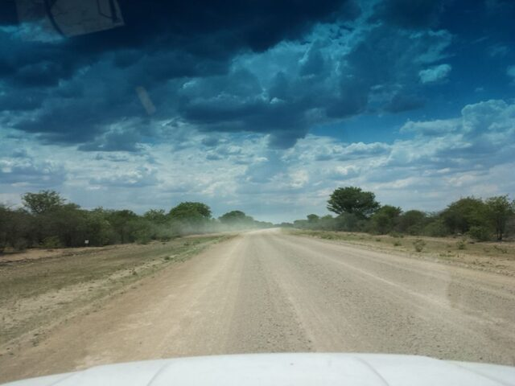
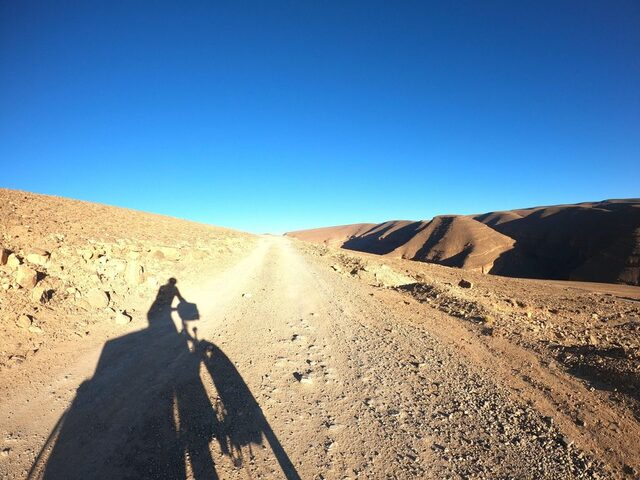
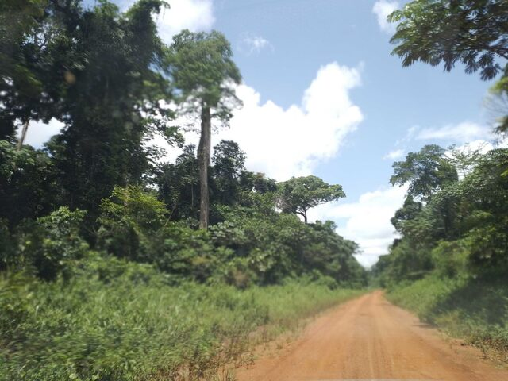
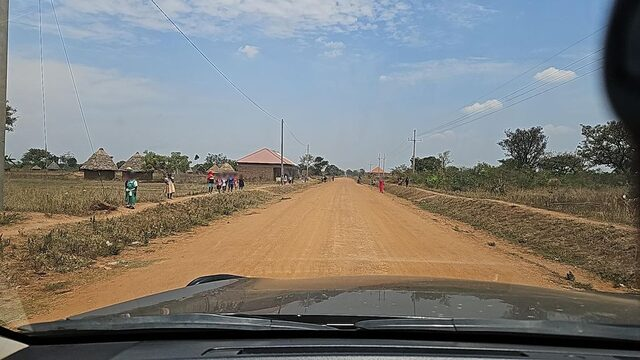
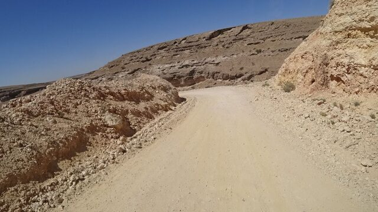
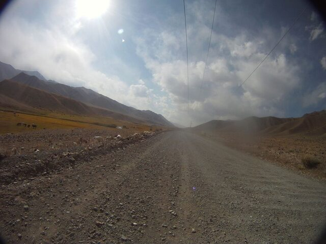
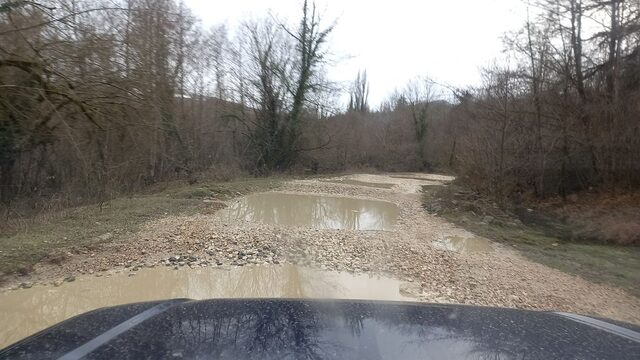
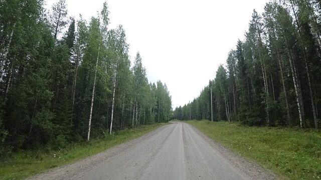
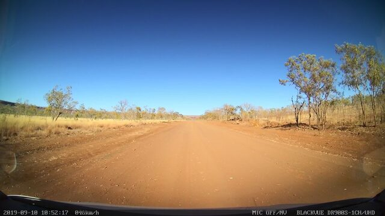
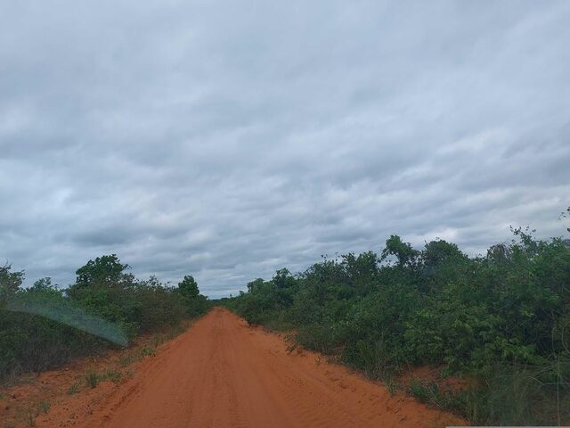
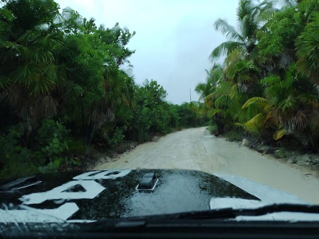
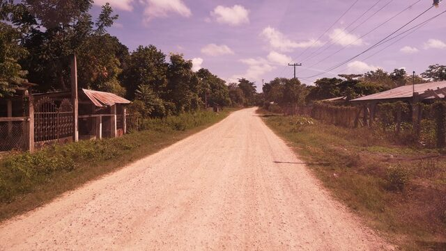
3. What apps show today
I checked about 30 OSM-based maps and apps: the web maps on the same six roads, each changing from paved to unpaved, and the phone apps by hand. They fall into three groups. Every app, with what its data carries and where to ask, is in the App reports.
- They show it and keep the class. OSM Carto (the default map on openstreetmap.org), Americana and DMD2 draw unpaved roads in their class colour with an added pattern. CyclOSM does it from zoom 14, for cycling. OSM Carto has done so since version 5.7.0 (January 2023), nine years after it was first requested: this proposal builds on its approach and offers the same idea to other maps.
- They do not show it, at least not by default. Organic Maps, Komoot, AllTrails, MapTiler, Mapy.com and many more draw the paved and the unpaved part of the same road as one identical line. OsmAnd can show surfaces, but only with an overlay that is off by default.
- They show it, but the class is lost. Ride with GPS and the OsmAnd Motorcycle styles draw unpaved roads like tracks. The Humanitarian style gives them the colour of residential streets. Gaia GPS draws tertiary, unclassified and residential roads as tracks when their smoothness is very bad or worse, or when they are tagged 4WD only: the right instinct, a dashed outline, but applied by turning the road into a track.
The third group shows why the class matters. A trunk road drawn like a track no longer says that it is the main route between two towns. And when an important road looks like a track, mappers who want the map to look right may change its highway tag to match, which spreads wrong data. The road class says how important a road is; the surface says what it is like to drive. One signal for both makes both harder to read: keep the signal, keep the class.
Show it, keep the class
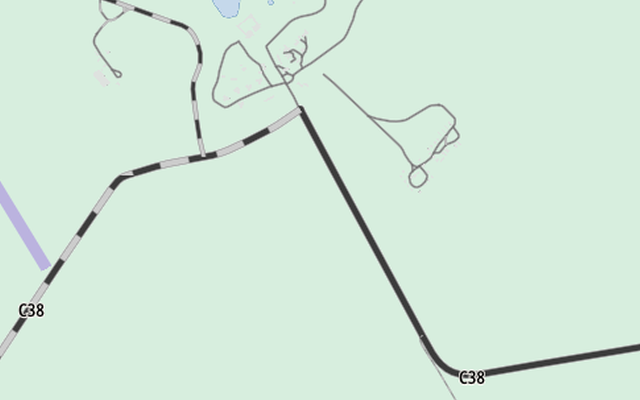
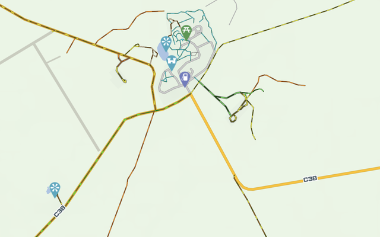
Do not show it
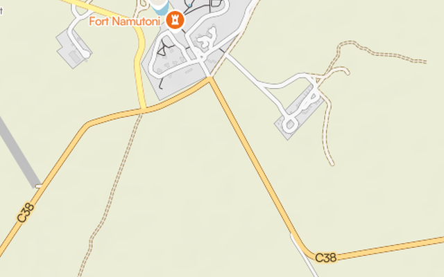
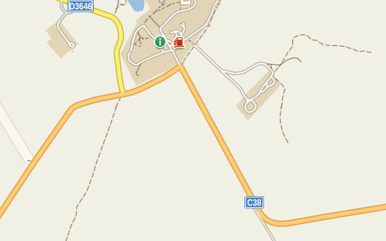
Show it, lose the class
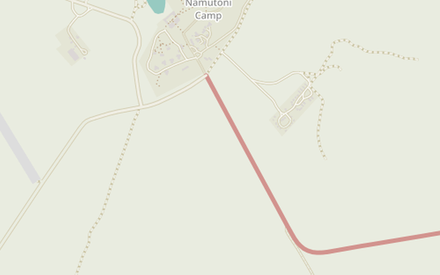
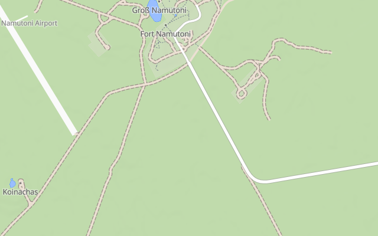
4. The proposal: two levels
Every road gets one of two levels from its tags:
| Level | Rule |
|---|---|
| Paved | surface is a paved value, or is missing with tracktype at most grade1, and there is no unpaved evidence |
| Unpaved | any other surface value; no surface and tracktype=grade2 or higher; or unpaved evidence, whatever the surface: smoothness=very_bad or worse, or 4wd_only=yes, recommended or extreme |
The paved values are a whitelist: paved, asphalt, chipseal, concrete, concrete:plates, paving_stones, sett, bricks, metal, cobblestone and cobblestone:flattened. wood, concrete:lanes and grass_paver count as paved only when smoothness is bad or better. A value with several parts (asphalt;gravel) is unpaved if any part is.
Why a whitelist. Most styles today list the unpaved values instead. Any value missing from that list, a local material, a new value, a typo, is then drawn as paved. OSM Carto, for example, does not list surface=laterite, a common material in Africa and Asia, so about 1,400 km of laterite main roads are drawn as paved. With a whitelist, such a value is drawn as unpaved, which is the safer mistake.
Why only two levels. Three quarters of all unpaved km (75.4%) are tagged simply surface=unpaved. On the ground that can mean a smooth graded road or a rough track; the photos confirm both. Any finer split on the map would mostly be a guess. Routers, which see the whole route and how much of it is unpaved, are better placed to judge how hard a trip is.
Unpaved does not mean bad. A graded gravel road in Finland or Namibia is fine for any car when it is dry. The map says what the surface is; the reader decides what that means for their vehicle and the season.
Untagged roads stay paved. The proposal only draws what mappers have tagged, and asks no one to change a tag.
5. Optional: the Off-road mark
On unpaved roads only, a map can add a mark for roads that need a high-clearance vehicle, when the tags say so:
smoothness=very_bador worsetracktype=grade4or highersurface=mudorrock, whensmoothnessandtracktypesay nothing4wd_only=yes,recommendedorextreme
smoothness and 4wd_only evidence also makes the road Unpaved, even when surface is paved: a road a city car cannot pass, such as a broken asphalt mountain road, is not drawn as paved.
The mark is optional because the evidence is rare. Only 5.9% of unpaved km carry smoothness, tracktype or 4wd_only, and 3.1% get the mark. In some countries it is common (34% of unpaved km in Bolivia, 25% in Iceland, where the F-roads are tagged 4wd_only); in most it is close to zero. A mark that appears only where someone added a tag looks patchy, so the two base levels are the core of the proposal. How the mark looks in each style is shown under How to draw it.
| Country | Unpaved km | With evidence | Off-road mark |
|---|---|---|---|
| Bolivia | 175,879 | 41.1% | 34.0% |
| Iceland | 8,469 | 28.8% | 25.0% |
| Nepal | 18,728 | 22.2% | 4.2% |
| Namibia | 46,989 | 10.4% | 1.7% |
| Australia | 459,598 | 4.8% | 3.0% |
| Brazil | 1,537,503 | 2.0% | 0.8% |
6. How to draw it
I designed the styles around a few principles from map design and from how people read maps:
- Keep the class colour. The colour says how important a road is, and readers rely on it to find the main route. The surface is added to it, never shown in its place.
- Add one signal, not a new kind of road. Unpaved is a property of the road, so it shows as a pattern on the road, not as a different line.
- Readable without a legend. A broken or grainy line is a common map convention for rougher roads, so the two base levels should read at a glance. This is a design goal; it has not been tested with readers yet.
- Distinct from what maps already use. Many maps draw tracks with dashes, tunnels with a dashed outline, roads under construction with a dashed fill and restricted access with dots. An unpaved road works best when it looks like none of them.
- Quiet at low zoom. On thin roads patterns blur, so below about 6 pixels of road width a plain tint of the class colour takes over.
- For every reader, on every map. Colours are tuned per class on white, forest, sand, hillshade and dark backgrounds, and checked for colour blindness.
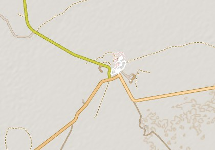
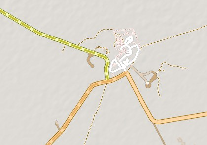
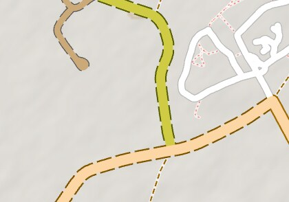
Following these principles, I designed five styles, from faint to strong. Each fits some maps better than others:
- Grain fill: a fine grain inside the road fill. The approach of OSM Carto, and the most subtle. For maps that can draw fill patterns; it needs a road wide enough to show the grain.
- Dashed centre line: a thin dashed line along the middle of the road. For vector styles where fill patterns are hard to draw, and for maps with nothing else in the middle of the road (OSM Carto puts access restrictions there).
- Dashed fill: dashes in a band along the middle of the fill. A calmer version of style 5, for maps with many minor roads.
- Dashed casing: the outline is dashed, the fill stays continuous, so the road stays one line. Not for maps that draw tunnels with a dashed outline.
- Dashed fill, full width: dashes across the whole road, as Americana does. The strongest, and loud in towns, so best where minor roads are few.
There is no single default: the right style depends on each map's design, and above all on how it already draws tracks, tunnels and construction. The Off-road mark uses the same pattern, only darker. The legend needs two short words: Unpaved and Off-road.
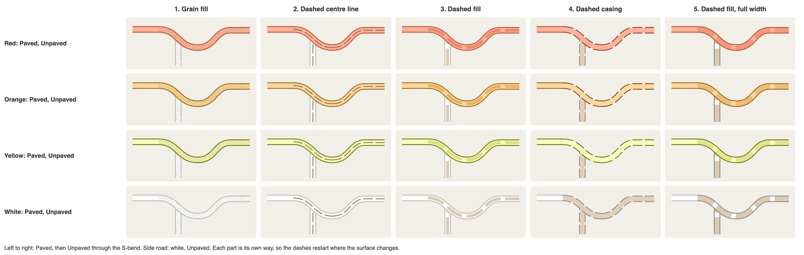
The demo below draws the five styles on real data, at any of the sample spots or anywhere else.
7. Limits
- Tile data. A style can only draw what its tiles carry. OpenMapTiles, used by Americana, MapTiler, Stadia and OpenFreeMap, has no surface below zoom 12, so these maps cannot show unpaved roads in an overview, whatever the style says. Protomaps has no surface at all. Shortbread, OsmAnd and Organic Maps already carry it, so for them it is a style change only.
- The data. Roads without a surface tag are drawn as paved, and some unpaved tags are out of date (16% in the photo check).
surface=unpavedsays nothing about how rough a road is. - The styles. They exist as mockups and a demo, not yet in a real app at scale, and whether they read without a legend has not been tested with readers.
8. Future work
- Tracks and paths. The same paved whitelist applies to them. How to draw them is a separate proposal. It will also cover the very worst roads (
smoothness=very_horribleorimpassable,4wd_only=extreme), which could be drawn like a path; until then they get the Off-road mark. - Routing. Routers already use
surfaceandsmoothness, and avoid unpaved roads when asked to. On a map that shows no surface, the detour they take looks inexplicable. A map that shows the surface explains the route. - Google Maps and Apple Maps have the same gap, but they do not use OpenStreetMap data, so they are outside this proposal.
- One request per app. I will open an issue for each app, adapted to its style and tiles. Progress is tracked in the App reports.
9. How to help
- Mappers: what helps most is
surfaceon main roads, updating tags that are out of date, andsmoothnesswhere a road really is rough. As always, tag what is on the ground, not what makes a map look right: the map should follow the tags, never the other way round. - Map and app makers: if you want to try it, four steps. Classify with a paved whitelist: it is ready in Lua (osm2pgsql flex, tilemaker), SQL (PostgreSQL) and JavaScript, with shared tests. Pick the style that stays distinct from your tracks and tunnels. Keep the class colour. Add two words to the legend, Unpaved and Off-road. Then tell me what does not fit your map.
- Map users: find your app in the App reports and ask for it through its channel; once a request is open, support it there.
- Everyone: discuss it on the OpenStreetMap community forum, or report a correction as a GitHub issue.
What happens next. Feedback is being collected in a thread on the OpenStreetMap community forum. Then comes one request per app, starting with the open-source ones. The App reports will show where each stands.
Questions
Isn't rendering up to each map maker?
Yes, and it stays that way. This changes no tag and sets no rule: it is a suggestion, with styles each map can use or ignore.
Will map makers listen?
In my experience, yes. When I asked maps, routers and editors to support surface=laterite, almost all of them added it within weeks. A clear, small request with data behind it is usually welcome.
Why not just tag better?
Mappers already did: 5.3 million km are tagged unpaved in the 54 countries studied alone. Most maps do not show it yet.
OSM Carto already does this. Why a proposal?
It builds on Carto. But most people use apps, and most apps show nothing.
Untagged roads are not always paved. Why draw them as paved?
The map shows what is tagged and never guesses (Limits).
A gravel road in Finland is fine for any car. Isn't "Unpaved" alarmist?
No: Unpaved is the surface, not the difficulty (The proposal).
Why not show difficulty instead?
Most unpaved roads are tagged only surface=unpaved, which says nothing about difficulty (The proposal).
Won't dashes clutter the map, or look like tracks or tunnels?
That is why there are five styles: each map picks one that stays distinct (How to draw it).
Data and methods
The numbers come from OpenStreetMap extracts of 54 countries (November 2026), classified with the two-level rules above. Most were chosen because unpaved roads are common there (in Africa, Asia and Latin America), with developed countries that have unpaved main roads (such as Iceland, Australia, Chile and Finland) and two mostly paved ones for contrast (Denmark and Czechia). The shares describe these countries, not OpenStreetMap as a whole. The two levels were shaped by replies from 44 mappers in the survey for my surface=laterite proposal. The rules, the code and every result are in the GitHub repository:
- Key numbers: every figure quoted here, generated from the data.
- Full report: per country and road class, with the official figures.
- Image review: the 55 roads checked on street-level imagery.
- Classifier: TypeScript reference and ports in Lua, SQL and JavaScript, all checked against the same 67 test cases.
Credits
- Christoph Hormann (imagico), who designed the unpaved grain of OSM Carto and wrote about road styling in OSM maps.
- Lukas Sommer (Sommerluk), for the fill pattern of OSM Carto (PR 3399).
- The mappers who answered my survey for the
surface=lateriteproposal, above all on what "unpaved" means on the ground in their countries. - Map data © OpenStreetMap contributors (ODbL). Official road statistics: CIA World Factbook, last edition with road data, via factbook.json (public domain). Street-level photos: Mapillary contributors (CC BY-SA 4.0), credited with each photo.